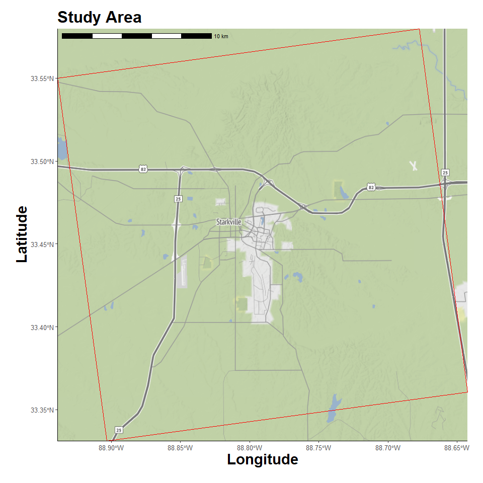

Plume Dispersian Model
4/13/25
- Libraries
- Custom Functions
- Timeout Duration
- Create Study Area Grid
- Location Map
- Dispersion Model
- Results Table
- Plot Dispersion
Libraries
Hide code
library(tidyverse)
library(here)
library(ggmap)
library(ggspatial)
library(sf)
library(terra)
library(gt)
library(pals)
library(splitr)
# devtools::install_github("rich-iannone/splitr")Custom Functions
Hide code
source(here("R/utilities.R"))
source_dir(here("R"))Timeout Duration
To limit meteorological data download times.
Hide code
getOption("timeout")[1] 60Hide code
options(timeout=10000)Create Study Area Grid
Choosing an arbitrary geographic point. It will serve as the emission point source location and be used to define study area extent.
Hide code
source_origin <- c(-88.7904, 33.4555) # Miss State Univ
timezone_utc <- get_timezone_utc(source_origin)Loading required package: lutzHide code
user_projection <- "+proj=utm +zone=18 +datum=WGS84 +units=m +no_defs"
grid_raster <- create_spatraster_grid(source_origin, user_projection) # projected
grid_raster_geo <- create_spatraster_grid_geo(source_origin) # no projLocation Map
Register Stadia Maps API to pull background images.
Hide code
map_api <- yaml::read_yaml(here("local", "secrets.yaml"))
register_stadiamaps(key = map_api$stadi_api)Vicinity around source.
Hide code
map_plot <- map_grid(grid_raster)ℹ © Stadia Maps © Stamen Design © OpenMapTiles © OpenStreetMap contributors.
Coordinate system already present. Adding new coordinate system, which will
replace the existing one.Hide code
map_plot
Dispersion Model
Parameters
Pathogen half life estimation. Not clear that splitRis using this parameter correctly… Could desired effect could be handled in post processing. The calculate_half_life() assumes exponential decay.
Hide code
virus_viability <- 3 # days until virus is non viable
viability_threshold <- 0.05 # this % maybe viable after the above virus_viability period
virus_hl <- calculate_half_life(virus_viability, viability_threshold)
virus_hl # daily reduction in virus viability[1] 0.6941346Initiate Model
Hide code
dispersion_msu <- create_dispersion_model()Add Points Source
Setting the source details.
Estimating the input emission rate is contentious. A couple poultry house PM tables here Bist et al, 2022.
Hide code
dispersion_msu <- dispersion_msu %>%
add_source(
name = "pathogen",
lon = source_origin[1],
lat = source_origin[2],
height = 5, # height above ground
rate = 100, # particle emission rate
pdiam = 2.5, # particle diameter, micrometers
density = 1.5, # particle density in units of g/cm3
shape_factor = 0.6, # shape/friction, 0-1 (smoothness, 1.0 is spherical)
rad_decay = virus_hl, # pathogen viabaility
release_start = ymd_hm("2020-02-16 10:00"),
release_end = ymd_hm("2020-02-16 10:00") + hours(36)
)Dispersion Parameters
Hide code
dispersion_msu <- dispersion_msu %>%
add_dispersion_params(
start_time = ymd_hm("2020-02-16 10:00"),
end_time = ymd_hm("2020-02-16 10:00") + hours(36),
direction = "forward",
#met_type = "gdas1",
met_type = "nam12", # highest res in splitR
met_dir = here("local/nam12"), # previously downloaded meteorological data
exec_dir = here("local/nam12"), # outputs
clean_up= FALSE
) Run Model
This run_model() takes 3-5mins… Saving a local copy for later.
Hide code
dispersion_msu <- dispersion_msu %>%
run_model()
# save
saveRDS(dispersion_msu, here("local/nam12/dispersion_msu.rds"))Hide code
# load saved run
dispersion_msu <- readRDS(here("local/nam12/dispersion_msu.rds"))
class(dispersion_msu)[1] "dispersion_model"Results Table
The interesting outputs are recorded to a datatable in model$disp_df.
Hide code
plume_table <- dispersion_msu$disp_df
dim(plume_table)[1] 89880 5Hide code
length(unique(plume_table$particle_i))[1] 2520Hide code
head(plume_table) # sample# A tibble: 6 × 5
particle_i hour lat lon height
<chr> <int> <dbl> <dbl> <dbl>
1 00001 1 33.6 -88.8 101
2 00002 1 33.6 -88.8 235
3 00003 1 33.6 -88.8 244
4 00004 1 33.6 -88.8 34
5 00005 1 33.6 -88.8 15
6 00006 1 33.6 -88.8 293Plot Dispersion
The base splitr plot. Interactive when locally run. (Doesn’t render in static md)
Hide code
# not run, too big
plot_dispersion(plume_table)Custom static plot for quick viewing. Work in progress…
Hide code
# not run, too big
plume_plot <- map_grid2(grid_raster, plume_table, group_col = "particle_i", vector_type = "point")
plume_plotAnimated plot (doesn’t render for static version)
Hide code
# animated_plume <- animate_plume(grid_raster, plume_table, group_col = "particle_i")
animated_plume <- animate_plume_simple(plume_table,
source_loc = c(source_origin[1], source_origin[2]),
group_col = "particle_i", point_size = 0.5)
animated_plumeHide code
# save
anim_save(here("assets/plume_animation.gif"), animation = animated_plume)